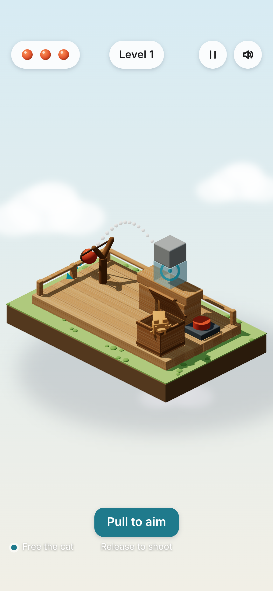
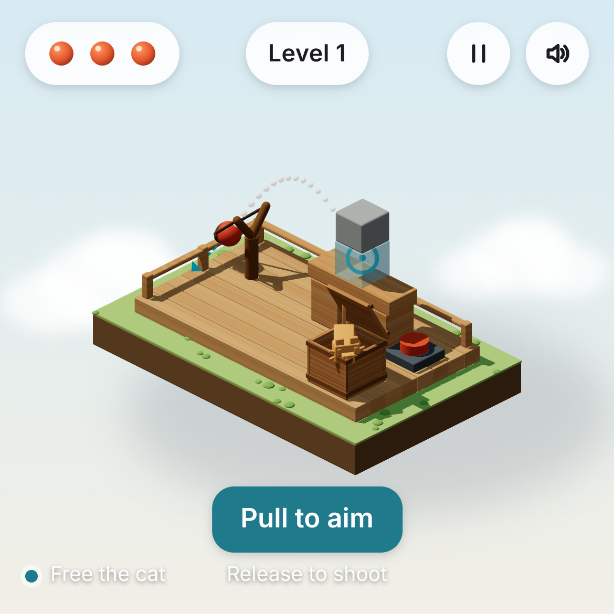
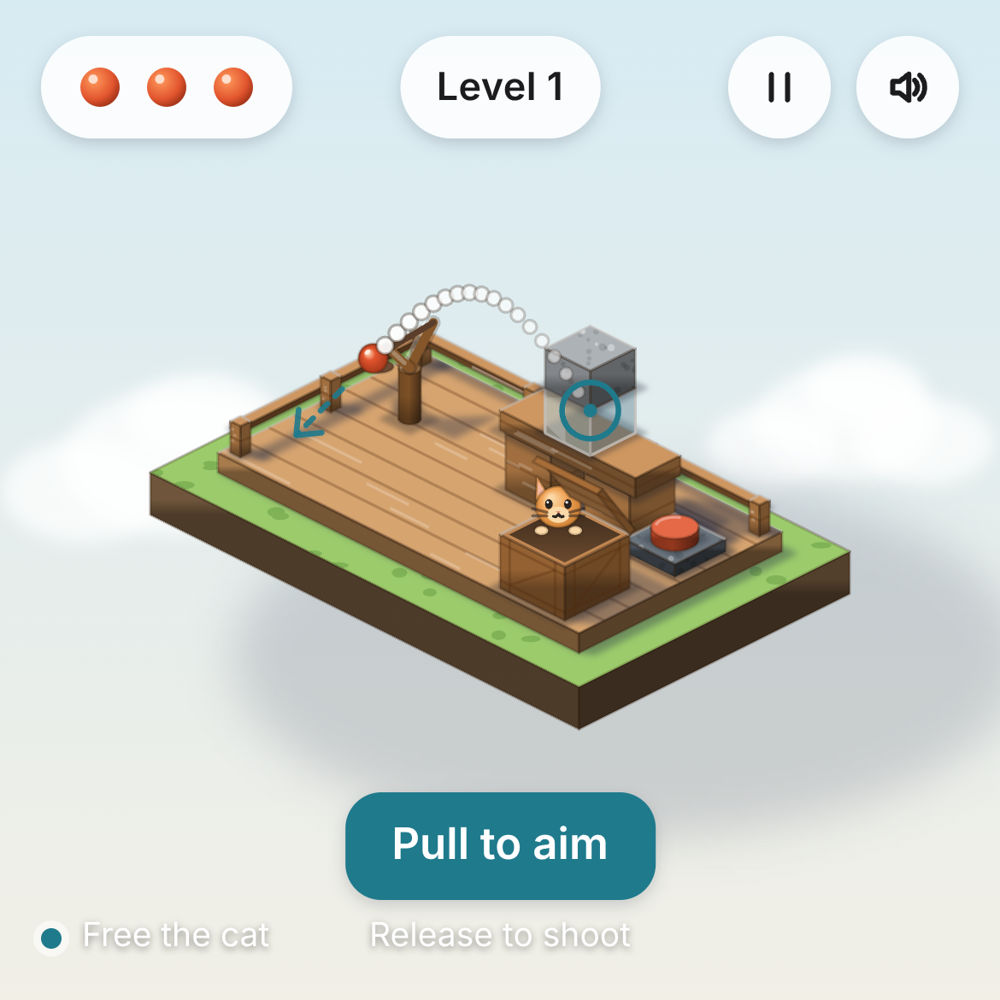
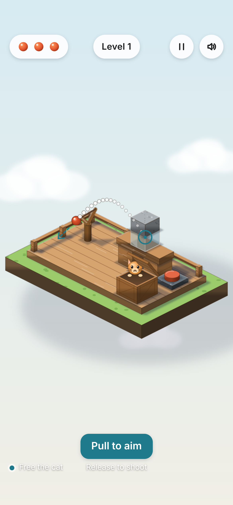
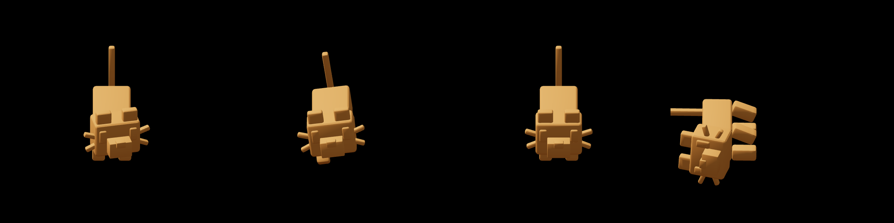
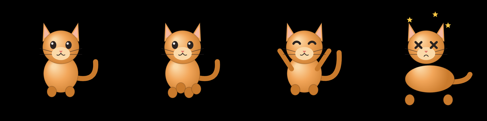

1단계(2026-11-01). 플레이는 아직 안 됨 — 아트 기준만 보는 화면. 아이폰 13 실제 해상도(1170×2532)와 정사각(1170×1170).



왼쪽 B / 오른쪽 A (1:1). 광원 1개(좌상단)·그림자·재질을 엔진이 계산해 모든 물체가 같은 규칙으로 보임.

광원 1개(좌상단 45°)·면 3개 음영·접촉 AO·동일한 바닥 그림자·선 두께 1종을 코드 규칙으로 고정. 외부 에셋 0.

B: Quaternius 고양이(CC0) — Idle · Walk · Jump · Death 클립에서 1프레임씩. 2단계에선 같은 모델을 실시간 애니메이션으로 씀.

A: 직접 그린 벡터 고양이 — 유휴 · 이동 · 성공 · 실패.
출처·라이선스: CREDITS.md. 만드는 법·재현성: board/knock-chain.md.